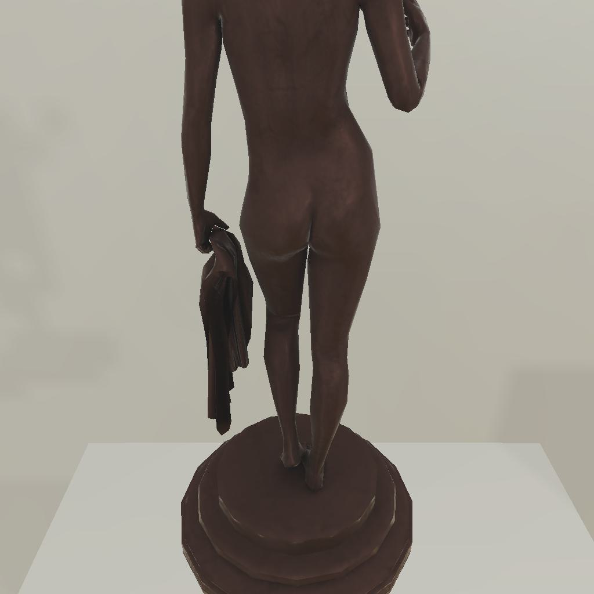
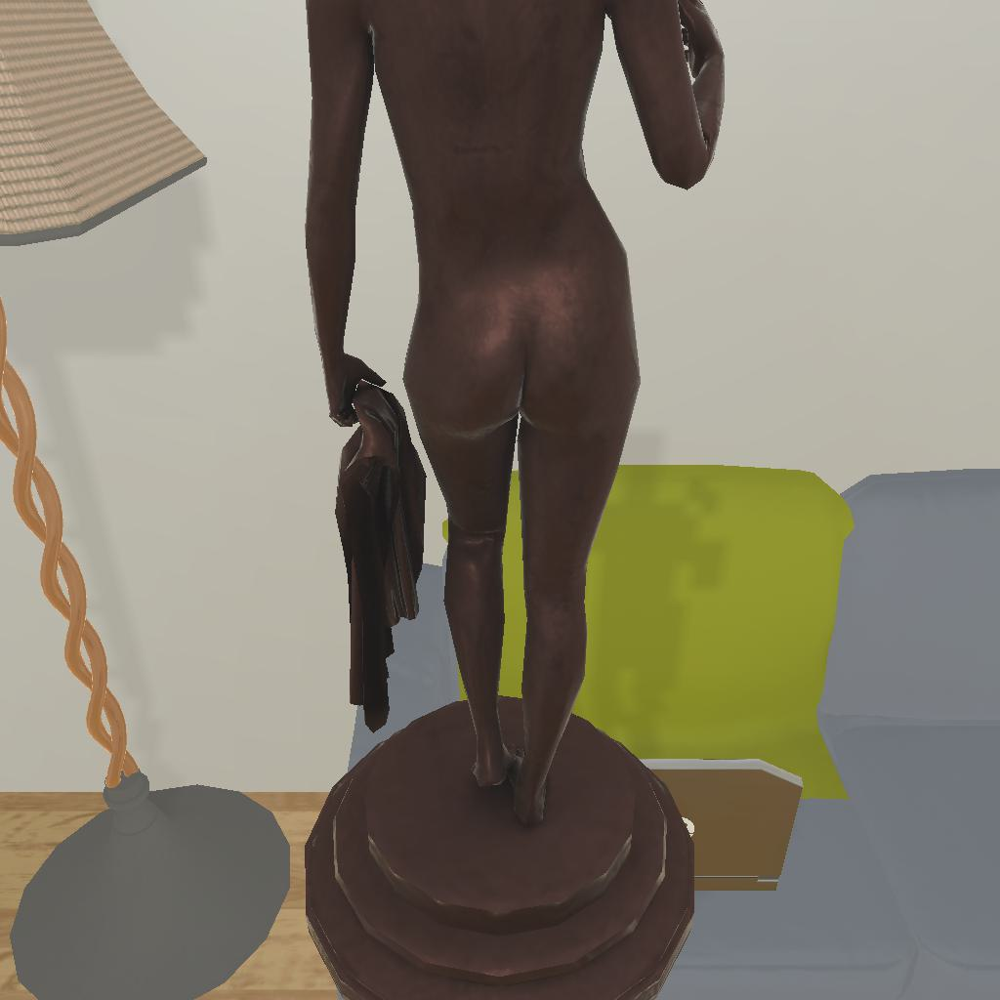
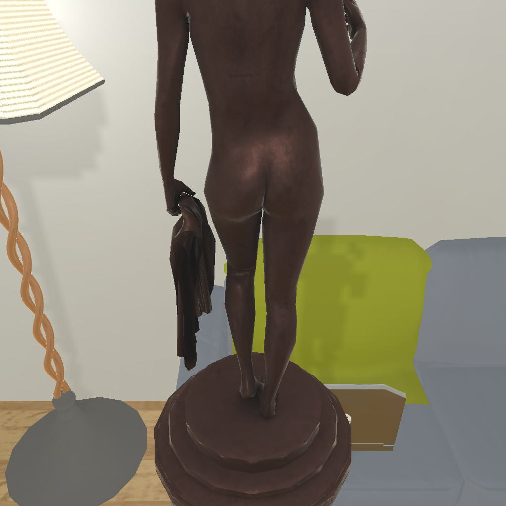

---------------------------------------------------------task: 4---------------------------------------------------------
--------------------------------------------------------------------------------------------------------------------------------------------------------------------
--------------------------------------------------------------------------------------------------------------------------------------------------------------------
Step:--------------------------------------------------------------------------10-------------------------------------------------------------------------------
----------------------------------------
VLM Prompt:
Image1:
Image2:
Image3:
**Instruction**
1. Analyze the provided images to identify all visible household objects and compare the difference between images (e.h. whether the object is opened or not and taken on hand or not), focusing on those relevant to the task description "examine the statue with the floorlamp."
2. Use the analysis of images and the task hint "The agent must find an object of the desired type, locate and turn on a light source with the desired object in-hand." to answer the question: what is the most reasonable action in the choices for the task description "examine the statue with the floorlamp"?
3. Decide and write the answer using the template: The answer is: (i): , where i is the real number. If there is no desired object in images, search every place based on **Initial Observation** to find the object. And if no one is exactly correct, choose a similar answer.
**Initial Observation**
You are in the middle of a room. Looking quickly around you, you can see armchair (1), coffeetable (1-2), sidetable (1), garbagecan (1), drawer (1), sofa (1), diningtable (1)
**Answer Choices**
(1): go to armchair 1
(2): go to coffeetable 1
(3): go to sidetable 1
(4): go to garbagecan 1
(5): go to drawer 1
(6): go to sofa 1
(7): go to coffeetable 2
(8): go to diningtable 1
(9): put statue 1 in/on sofa 1
(10): use floorlamp 1
(11): examine statue 1
(12): examine sofa 1
**Answer**
Let's think step by step by following the instructions.
----------------------------------------
----------------------------------------
Original Response:
From the images provided, it is clear that the statue is already in hand, as seen in all three images where the agent is holding the statue. The only visible household object relevant to the task description "examine the statue with the floorlamp" is the floorlamp seen in Image3, which is next to the armchair and the sidetable.
Given the task hint, the agent must find an object of the desired type, which is the statue already in hand, locate and turn on a light source with the desired object in-hand. The light source in this scenario is the floorlamp seen in Image3. Therefore, the most reasonable action to take would be to use the floorlamp to examine the statue.
The answer is: (10): use floorlamp 1.
----------------------------------------
----------------------------------------
>>> Refine Original VLM Response and Get Pure Action: use floorlamp 1
----------------------------------------
-----------------------------------------------------------------
Running time: 8.71608591079712 seconds
Total Money: 1.8972
-----------------------------------------------------------------
-----------------------------------------------------------------
Text Observation:You turn on the floorlamp 1.
-----------------------------------------------------------------
SUCCEED